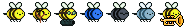

This is the project I made for my 2D Game Development class! I call it Bee Defense! I enjoyed it a lot, it taught me a great amount about how games work and how I can make things efficient. I've built off of my knowledge from my 3D Vulkan project and have made an even better engine! Well... for tower defense games, that is. The physics are incredibly simple since there is no blocking, only things traveling with a velocity and hitting other things. I'm using my professor's window system for the UI and his actor system for the moving sprites. This is to save time and the resources were available to me so I figured I'd use them (with permission, of course).
As with any good game, there has to be gameplay! This game is heavily inspired by the Bloons Tower Defense series. Flowers go from point A to point B and you strategically place towers (bees) to shoot them in an attempt to stop them.
There are two levels, one in the image at the top of the page, and the one you see here. The first demonstrates the basics of the game and engine. Bees move along a set path and you must stop them. The second level shows another feature of the engine, multiple paths in a round-robin enemy sending system.
There are 7 bees to choose from in Bee Defense (and I love them all). In order on the image above, you have the stinger, the most basic bee with a simple attack, a sting. After that, you have the slingshot bee. This is a super long range tower with low damage and pierce. It can also be upgraded to have homing shots! Works best for covering a lot of area. Third, there's the laser bee. I'm very proud of my laser sprite here. It is a slightly longer range but higher damage and pierce unit. The best use for this would be at the end of a long straight line. Fourth, there's the water bee, the first Area of Effect bee! With a small range, it's meant to be used in loops or places where flowers can be slowed. Fifth, there's the techno bee. This bee is a global sniping bee. To compensate for it's infinite range, it has a high cost and slow attack speed. Sixth, there's the snow bee! It's one of two support-centered towers. This one's job is to slow down flowers around it. It also does a little damage which is upgradable. Finally, there's the best support tower, the music bee! With it's little toots when it attacks, this bee buffs allies in its radius with increased stats, different ones available through upgrades. And that wraps up the roster! I had a ton of fun making these bees and solving each one's unique coding challenges.
Every bee has 2 levels of upgrades, each with another 2 options in them. I haven't extensively balanced all of them, as mostly all of these features are to show what the engine is capable of, rather than being a completely balanced experience. I still tried to make everything reasonable, however! Some upgrades even give towers unique methods of attacking, rather than just boosting core stats like range or speed. A few examples would be the slingshot's homing shot and the snow bee's upgrade to gain a slowing projectile attack independent of its snow wave.
This system uses the common window and event systems along with being tied to each bee, passing data along as needed. It was a challenge getting this system to work, and I'm very proud of how it turned out!.
Along with in-game upgrades, there are persistent perks that you can purchase by winning games! Currently, there exist perks for pierce, attack speed, cost reduction, more starting money, and the first tier of stinger upgrades for free. This is inspired from the Bloons Monkey Knowledge system.
Along with perks, there are also powers that persist through levels and also give you a special consumable ability. The are currently four of these powers, the first being Bee Swarm. This power lets you kill all flowers on screen instantly. It's useful for when you have a huge rush of enemies on screen and need to get out of a pinch. Next, there's Time Warp. This power lets you slow down all flowers currently on the screen. It's useful for fast flowers getting past you defenses. Third, there's the Speed Totem which increases the attack speed of all bees in its range. Finally, there's the Cash Drop which, as the name suggests, gives you some money! Much like every other part of this game and engine, they were a unique challenge to code and extremely satisfying to get working.
Bee Defense's editor was a class favorite among all the other projects. In this mode, you can place paths, edit their width, pick a background image and music, and save you custom levels to play! When placing paths, the start point is always highlighted green and the current path section is drawn is red, following the mouse cursor. All the levels get saved in a json format so they're easily saved and read. You can also increase and decrease the width of the paths, which prevents placement of bees within the width.
Instead of every bee checking if every flower on the screen is able to be shot, they use a bucket system. When an entity moves, its buckets are reassigned. Only the buckets intersecting the level's path (green buckets above) are checked. Further, bees only check the buckets that their range includes. These optimizations make the game much faster. The sniper is the only case of a bee checking all buckets, but only those that are valid buckets, so it's still an increase in optimization! This was one of the earliest systems developed for the game, since everything after depended on it for collisions and checks.